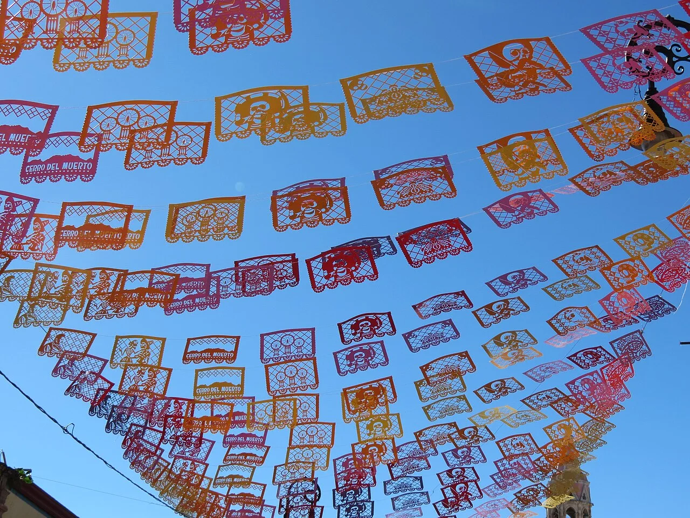
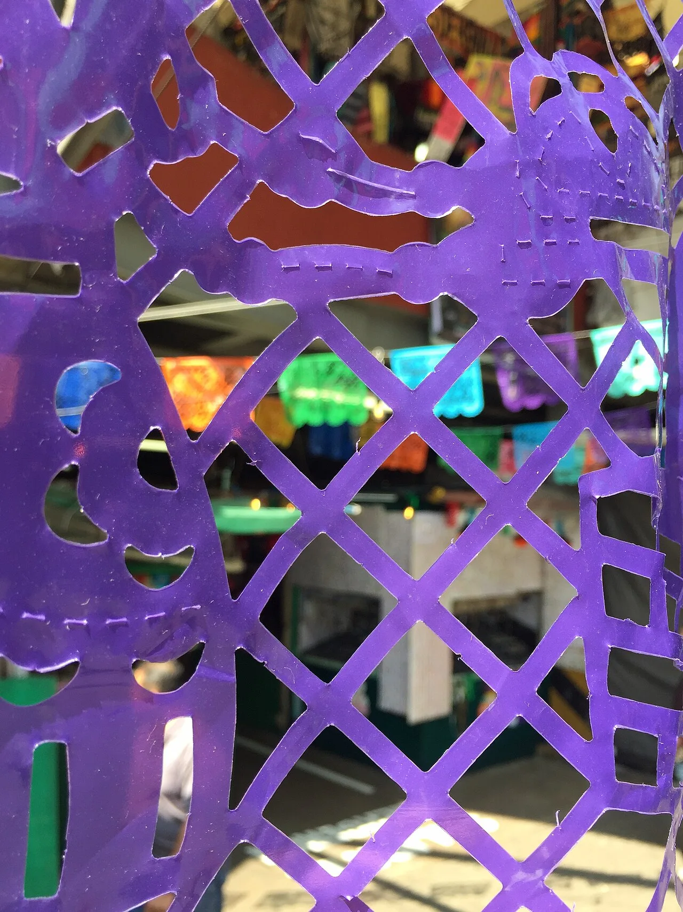

En el papel picado, dibujar consiste también en decidir qué debe permanecer unido. Un hueco demasiado amplio o un puente demasiado débil puede separar una parte de la figura. La imagen aparece al retirar materia, pero depende de la continuidad que queda. Esta relación entre vacío y resistencia vuelve interesante un objeto que suele mirarse deprisa, como si toda su complejidad estuviera en el color.
La ficha del Centro de Información y Documentación Alberto Beltrán registra el libro El papel picado, de Vicente Gatica Meza, publicado en 2014. Su descripción vincula historia y técnicas con Huixcolotla, Puebla. Es una referencia bibliográfica, no una lectura completa del volumen. El directorio cultural de la Secretaría de Cultura registra además casas de artesanías en San Salvador Huixcolotla. Estas fuentes permiten localizar un contexto productivo sin atribuirle automáticamente cada pieza fotografiada en México. [1] [2]
La primera imagen fue tomada en Aguascalientes: filas de papel atraviesan el espacio sobre una calle. La segunda muestra un detalle en Coyoacán. Sabemos dónde se fotografiaron, pero no quién fabricó esas hojas ni en qué taller. La instalación, el lugar de producción y el origen de una técnica son datos diferentes. Mantenerlos separados impide que la circulación de la imagen fabrique una procedencia.


A distancia, las hojas funcionan como unidades repetidas. Cerca, aparecen contornos y vacíos que pueden cambiar el ritmo de cada pieza. El conjunto necesita ambas escalas: una lectura general que acompañe el recorrido y otra que recompense detenerse. Diseñar esa relación no equivale a llenar toda la superficie. La proporción entre materia y hueco influye en el dibujo y en la continuidad física del soporte.
Una instalación temporal trabaja además con el lugar que ya existe. En la fotografía de calle, la repetición modifica la percepción del espacio superior sin construir una cubierta continua. Se mantiene visible el cielo y la luz atraviesa los vacíos. No hemos medido sombra, resistencia al viento ni comportamiento bajo lluvia: la imagen permite analizar una relación visual, no certificar prestaciones ambientales o estructurales.
La duración breve introduce una pregunta que el diseño de objetos permanentes puede eludir: cuánto tiempo necesita existir algo para cumplir su propósito. Una celebración puede requerir preparación y trabajo para unas horas o unos días. Esa temporalidad no vuelve irrelevante el esfuerzo. Tampoco convierte cualquier desperdicio en aceptable. Para evaluar el impacto harían falta datos de material, tintes, montaje, recogida y destino posterior.
El papel puede parecer un recurso modesto y exigir una destreza considerable. El valor del trabajo no se deduce del precio aparente de la materia prima. Una colaboración con un taller debería presupuestar pruebas, producción y cambios, además de acordar créditos. Si solo se compra una cantidad de unidades, es fácil perder de vista las decisiones que hacen legible y realizable cada diseño.


La repetición tampoco exige uniformidad absoluta. La alternancia de colores o figuras puede producir secuencias distintas, pero necesita un orden comprensible para no disolver el conjunto. Un encargo concreto debería definir qué se repite y qué puede variar. Esa decisión vincula la capacidad del proceso de fabricación con la forma en que se percibirá la instalación.
La técnica ofrece una tentación frecuente para la identidad visual: tomar sus contornos como sinónimo de una cultura nacional entera. Ese atajo puede borrar diferencias regionales, usos y autores. Para una publicación o una marca resulta más fértil documentar una pieza y trabajar con sus responsables que convertir una apariencia reconocible en un recurso genérico de ambientación.
El papel picado permite pensar una sofisticación que no depende de durar indefinidamente ni de emplear materiales costosos. Depende de conocer la relación entre una imagen, un soporte y un tiempo de uso. Lo que desaparece después de una celebración también puede haber organizado una forma precisa de mirar y reunirse. La tarea del diseño incluye decidir cómo llega, qué aporta mientras está y qué ocurre cuando se retira.
Fuentes.
- CID Alberto Beltrán / Secretaría de Cultura — El papel picado, Vicente Gatica Meza, 2014: ficha bibliográfica
- Sistema de Información Cultural — directorio de casas de artesanías de San Salvador Huixcolotla, Puebla
Lectura visual y bibliográfica, sin visita a talleres ni consulta íntegra del libro catalogado. Las fotografías muestran instalaciones en Aguascalientes y Coyoacán, no acreditan su lugar de fabricación.
Fuentes consultadas el 15.11.2026. Análisis e interpretación: RUMMOR. Edición privada para revisión.